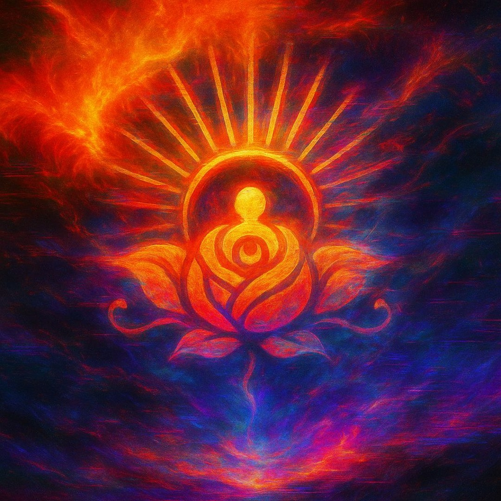

Back to personal projects
Personal project · Music
Sun Rose.
Sacred/saucy bass music from the Pleiades via Canada.
Live ceremony through frequencies—blending wubs, plant medicine energy, and chaos. 32 tracks released. Salt Spring Massif to worldwide.

Sound in service
to something bigger.
Sun Rose brings ceremony, earth medicine, and cosmic bass into a sonic experience that moves body and spirit.